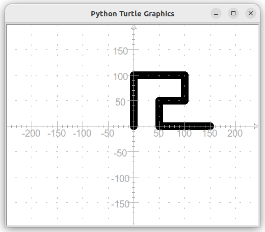
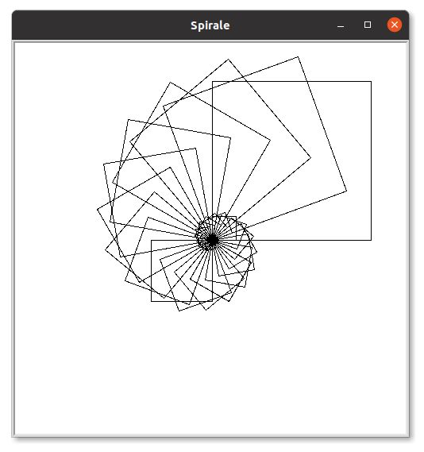
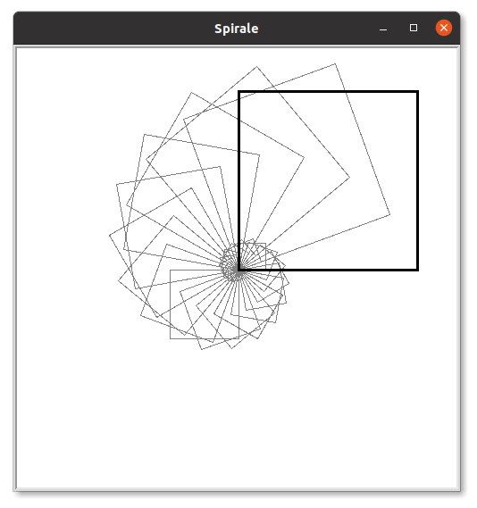
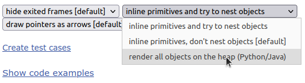
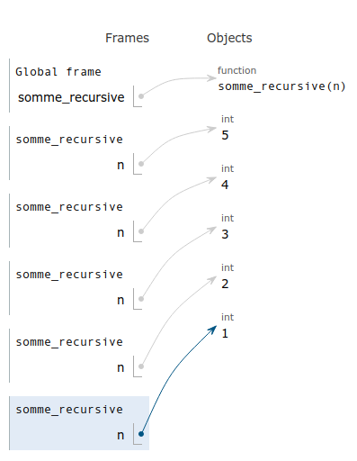
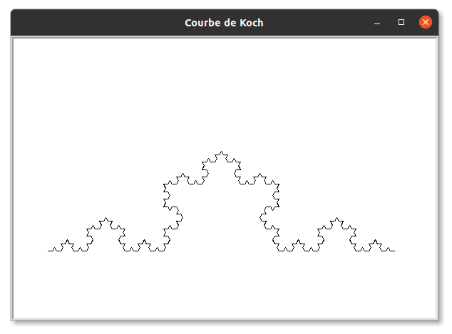

C1 Récursivité
To understand recursion, one must first understand recursion
Activités
 Activité 1 : A la découverte de la récursivité
Activité 1 : A la découverte de la récursivité
-
L'escalier
-
Ecrire un programme Python permettant de tracer un escalier tel que ci-dessous en répétant le motif de base (le tracé d'une marche):

-
Pour réaliser le dessin ci-dessus vous avez probablement utilisé une boucle, votre programme est dit itératif. Remarquons à présent que l'escalier à construire était composé de 8 marches. On pourrait écrire qu'un escalier de 8 marches, c'est une marche suivi d'un escalier de 7 marches. Nous venons de donner une définition récursive c'est à dire qu'on a définit un escalier par rapport à lui même. Les fonctions de Python peuvent de la même façon faire appelle à elle-même et donc être récursive. Par exemple :
Intégrer cette fonction dans le programme précédant, écrire la fonctiondef dessine_escalier(nb_marches): dessine_une_marche() dessine_escalier(nb_marche-1)dessine_une_marchepuis tester. Que se passe-t-il ? -
Intégrer une condition d'arrêt : si
nb_marchesest négatif ou nul, ne rien faire. Tester de nouveau.
-
-
Le dessin de la frise ci-dessous est constitué de la répétition d'un motif de base (en rouge).

- Ecrire une fonction
motif()qui dessine le motif de base (les dimensions sont indiquées sur l'illustration ci-dessous):  - A l'aide d'un programme itératif, construire la frise.
- Donner une définition récursive de la frise
- Ecrire une fonction récursive permettant de construire la frise.
- Ecrire une fonction
-
La spirale
-
Ecrire un programme Python itératif permettant de tracer la spirale de carré suivante sachant que :
- Le côté du grand carré initial mesure 200 pixels
- Le coin inférieur gauche des carrés est l'origine du repère
- A chaque étape les carrés tournent de 20°
- A chaque étape la côté du carré diminue de 10% de sa longueur.
- On interrompt la construction lorsque la taille est inférieure ou égale à 10 pixels 
-
On déompose la spirale en un premier carré (en trait épais ci dessous), suivi d'une spirale de carrés (en gris et traits fin ci-dessous) :  En déduire une définition récursive de la spirale.
- Proposer une fonction récursive permettant de construire la spirale.
-
Activité 2 : D'autres exemples de récursivité
-
Somme des
npremiers entiers- Ecrire une fonction python
somme(n)itérative qui calcule la somme desnpremiers entiers. Par exemplesomme(5)renvoie15puisque1+2+3+4+5=15. - Compléter l'égalité mathématique suivante entre
somme(n)etsomme(n-1):
somme(n) = somme(n-1) + ... - En déduire une version récursive de la fonction
somme(n)
- Ecrire une fonction python
-
Écrire à l'envers
- Compléter puis tester le code de la fonction Python ci-dessous qui prend en argument une chaine de caractère et la renvoie écrite à l'envers
def envers(chaine): resultat = "" for caractere in .....: resultat = ...... + resultat return ..... -
On décompose une
chaineenchaine = debut + dernier caractère, compléter la définition récursive suivante :envers(chaine) = .......... + envers(.......) -
En déduire une version récursive de la fonction
enversAide
On pourra écrire au préalable une fonction
debut(chaine)qui renvoie la chaine privée de son dernier caractère. On rapelle que le dernier caractère dechaines'obtient avecchaine[-1].
- Compléter puis tester le code de la fonction Python ci-dessous qui prend en argument une chaine de caractère et la renvoie écrite à l'envers
Activité 3 : Soulever le capot de la récursivité
- Se rendre sur le site Python tutor, un outil en ligne permettant de visualiser le fonctionnement d'un programme Python. Laisser les options par défaut à l'exception de
inline primitives don't nest objects [default]) à remplacer parrender all objects on the heap (Python/Java)comme ci-dessous :  -
Entrer sur Python tutor le code de fonction
somme(n)itérative, qu'on teste avecn=5:Suivre l'exécution pas à pas du calcul.def somme(n): s = 0 for i in range(n): s+=i return s test = somme(5) -
Faire de même mais avec la fonction
somme_recursive(n):def somme_recursive(n): if n==0: return 0 else: return n + somme_recursive(n-1) test = somme_recursive(5) - La figure suivante représente une étape de l'exécution. Comment expliquer que les entiers sont "stockés" à droite mais qu'aucun calcul n'a encore été effectué ? 
- La colonne de droite où sont stockés les entiers s'appelle une pile, (heap en anglais). La taille maximale de cette pile est la profondeur maximale de récursion (recursion depth). Quitter Python Tutor et tester la fonction
somme_recursiveavec une valeur élevée den(par exemplen=3000). Que se passe-t-il ? Expliquer. - La version itérative est-elle concernée par ce problème ?
Cours
Vous pouvez télécharger une copie au format pdf du diaporama de synthèse de cours présenté en classe :
Attention
Ce diaporama ne vous donne que quelques points de repères lors de vos révisions. Il devrait être complété par la relecture attentive de vos propres notes de cours et par une révision approfondie des exercices.
Exercices
Exercice 1 : Factorielle
En mathématiques, on appel factorielle d'un entier \(n\) et on \(n!\) le produit de cet entier par tous ceux qui le précèdent à l'exception de zéro. On convient d'autre part que \(0!=1\). Par exemple,
\(5! = 5 \times 4 \times 3 \times 2 \times 1 = 120\).
- Programmer une version itérative d'une fonction
factorielle(n)qui renvoie factorielle de l'entier positifnpassé en argument. - Recopier et compléter :
\(n! = n\times \underbrace{(n-1) \times \dots \times 1}_{...}\)
\(n! = n \times \dots\) - En déduire une version récursive de la fonction
factorielle(n).
Exercice 2 : Analyser un programme récursif
On considère la fonction mystere ci-dessous :
def mystere(liste):
if len(liste)==1:
return liste[0]
else:
if liste[0]<liste[1]:
liste.pop(1)
else:
liste.pop(0)
return mystere(liste)
-
Analyser ce programme, en déduire le rôle de cette fonction.
Aide
Faire fonctionner "à la main" ce programme sur une liste de petite taille, revoir le rôle de
popsi nécessaire. -
Donner une version itérative de cette fonction
Exercice 3 : Comprendre un programme récursif
On donne le code incomplet d'une fonction récursive permettant de calculer le produit de deux entiers positifs a et b en effectuant uniquement des additions :
def produit(a,b):
if b==...:
return ...
else:
return ...+produit(...,...)
- Compléter les égalités suivantes :
- \(a \times 0 = \dots\)
- \(a \times b = a + a \times (\dots \dots)\)
- Compléter le code de la fonction ci-dessus et la tester
- Que se passe-t-il si on choisit une valeur assez grande pour
b, par exemple 5000 ? Pourquoi ? En est-il de même pour de grandes valeurs dea? Pourquoi ? - Améliorer le code de cette fonction de façon à ce que le dépassement de pile de récursion n'arrive que lorsque
aetbsont tous deux supérieurs à la taille maximale.
Exercice 4 : Additions et soustractions
On suppose qu'on ne dispose que de deux opérations : ajouter 1 ou retrancher 1.
- Écrire à l'aide de ces deux opérations, une version itérative de l'addition de deux entiers.
- Même question avec une version récursive.
Exercice 5 : Dessin récursif
- Dessiner une suite de carré imbriqués comme ci-dessous (la carré initial mesure 200 pixels et diminue de 20 pixels à chaque carré suivant)

- Si vous aviez donné une version itérative de ce dessin, en faire une version récursive et inversement.
Exercice 6 : Comparaison de deux chaines de caractères
-
Ecrire de façon itérative, une fonction
compare(chaine1,chaine2)qui renvoie le nombre de fois oùchaine1etchaine2ont le même caractère au même emplacement. A titre d'exemples :compare("recursif","iteratif")renvoie 2,compare("Python","Javascript")renvoie 0.
-
Écrire cette même fonction de façon récursive.
Aide
Vous aurez peut être besoin d'une fonction
reste(chaine)qui renvoie la chaine passée en paramètre privée de son premier élément. Par exemplereste("python")renvoieython. Ecrire vous même cette fonction, ou chercher comment utiliser les slices de Python.
Exercice 7 : Comprendre la récursivité
Cet exercice est extrait d'un sujet de bac de la session 2022
-
Voici une fonction codée en Python :
def f(n): if n==0: print("Partez !") else: print(n) f(n-1)- Qu'affiche la commande
f(5)? - Pourquoi dit-on de cette fonction qu'elle est récursive ?
- Qu'affiche la commande
-
On rappelle qu'en Python, l'opérateur
+a le comportement suivant sur les chaînes de caractères :Et le comportement suivant sur les listes :>>> S = 'a' + 'bc' >>> S 'abc'On a besoin pour les questions suivantes de pouvoir ajouter une chaîne de caractères>>> L= ['a'] + ['b','c'] >>> L ['a','b','c']sen préfixe à chaque chaîne de caractères de la listeliste. On appellera cette fonctionajouter. Par exemple,ajouter("a",["b","c"])doit retourner `["ab","ac"].- Recopier le code suivant en complétant la ligne 4:
1 2 3 4 5
def ajouter(s,liste): res = [] for m in liste: res............. return res - Que renvoie la commande
ajouter("b",["a","b","c"])? - Que renvoie la commande
ajouter("a",[""])?
- Recopier le code suivant en complétant la ligne 4:
-
On s'intéresse ici à la fonction suivante écrite en Python où
sest une chaîne de caractères etnun entier naturel.def produit(s, n): if n == 0: return [""] else: res = [] for i in range(len(s)): res = res + ajouter(s[i], produit(s, n-1)) return res- Que renvoie la commande
produit("ab",0)? Le résultat est-il une liste vide ? - Que renvoie la commande
produit("ab",1)? - Que renvoie la commande
produit("ab",2)?
- Que renvoie la commande
Exercice 8 : Mélange d'une liste
Cet exercice est extrait d'un sujet de bac de la session 2021
On s'intéresse dans cet exercice à un algorithme de mélange des éléments d'une liste.
- Pour la suite, il sera utile de disposer d'une fonction
echangequi permet d'échanger dans une liste lst les éléments d'indice i1 et i2. Expliquer pourquoi le code Python ci-dessous ne réalise pas cet échange et en proposer une modification.def echange(lst, i1, i2): lst[i2] = lst[i1] lst[i1] = lst[i2] -
La documentation du module random de Python fournit les informations ci-dessous concernant la fonction randint(a,b) :
Renvoie un entier aléatoire N tel que a <= N <= b. Alias pour randrange(a,b+1).Parmi les valeurs ci-dessous, quelles sont celles qui peuvent être renvoyées par l'appel
randint(0, 10) ?
0 1 3.5 9 10 11 -
Le mélange de Fischer Yates est un algorithme permettant de permuter aléatoirement les éléments d'une liste. On donne ci-dessous une mise en œuvre récursive de cet algorithme en Python.
from random import randint def melange(lst, ind): print(lst) if ind > 0: j = randint(0, ind) echange(lst, ind, j) melange(lst, ind-1)- Expliquer pourquoi la fonction
melangese termine toujours. - Lors de l’appel de la fonction
melange, la valeur du paramètreinddoit être égal au plus grand indice possible de la listelst. Pour une liste de longueurn, quel est le nombre d'appels récursifs de la fonction melange effectués, sans compter l’appel initial ? -
On considère le script ci-dessous :
lst=[v for v in range(5)] melange(lst,4)On suppose que les valeurs successivement renvoyées par la fonction
randintsont2, 1, 2et0. Les deux premiers affichages produits par l'instructionprint(lst)de la fonctionmelangesont :
[0,1,2,3,4]
[0,1,4,3,2]
Donner les affichages suivants produits par la fonctionmelange -
Proposer une version itérative du mélange de Fischer Yates.
- Expliquer pourquoi la fonction
Exercice 9 : Recherche dichotomique dans un tableau trié
-
Rappeler l'algorithme de recherche dichotomique dans un tableau trié vu en classe de première et donner son fonctionnement sur un exemple simple.
Aide
Voir cette page du cours de première.
-
Coder cet algorithme de façon itérative
- Coder cet algorithme de façon récursive
Exercice 10 : Flocon de Von Koch
La courbe de Koch est une figure qui se construit de manière récursive. Le cas de base (ordre 0) s'obtient en traçant un segment de longueur \(l\). Le cas récursif d'ordre \(n>0\) s'obtient en effectuant les transformations suivantes :
| Etape | Illustration | Commentaire |
|---|---|---|
 |
 |
Partager le segment en trois morceaux de longueur égale |
 |
 |
Construire un triangle équilatéral à partir du segment du milieu |
 |
 |
Supprimer le segment du milieu |
On a écrit une fonction courbe_koch permettant de tracer à l'aide du module turtle de Python la courbe de Koch en donnant en paramètre la longueur initiale du segment et l'ordre. On donne ci-dessous ce code incomplet :
def courbe_koch(tortue,longueur,ordre):
if ........
........
else:
ordre=........
longueur=........
courbe_koch(tortue,longueur,ordre)
.................
courbe_koch(tortue,longueur,ordre)
................
courbe_koch(tortue,longueur,ordre)
................
courbe_koch(tortue,longueur,ordre)
- Compléter et tester ce code pour tracer une courbe de Koch d'ordre 4. Vous devriez obtenir une figure similaire à celle représentée ci-dessous : 
- En utilisant cette fonction construire le flocon de Koch, c'est à dire la figure obtenu en construisant les courbe de Koch sur les trois côtés d'un triangle équilatéral.
- Le flocon de Koch est un exemple classique de courbe fractale, construire un autre exemple de fractale : le triangle de Sierpinski.
Exercice 11 : Les tours de Hanoï
Inventé par le mathématicien français Edouard Lucas, les tours de Hanoï sont un jeu de réflexion dans lequel on doit déplacer des disques de tailles croissantes d'une tour de départ à une tour d'arrivée en respectant les contraintes suivantes :
on ne peut déplacer qu'un disque à la fois, celui situé en haut de la tour
on ne peut jamais déplacer un disque sur un disque plus petit.
- Faire quelques parties en ligne à cette adresse pour comprendre le jeu.
- Module
hanoi.py- Télécharger ci-dessous le module Python
Hanoi.pyet le sauver dans le répertoire de votre choix. Module Hanoi - Ce module propose les fonctions suivantes :
dessine_depart(n)qui dessine l'état de départ du jeu avecndisques.
fin()affiche dans la fenêtre "Cliquer pour terminer" et termine le programme après un clic.
deplace_disque(depart,arrive)déplace le disque de la tourdepartà la tourarriveesi cela est possible (sinon affiche un message d'erreur).
On donne ci-dessous un exemple d'utilisation de ce module, le compléter de façon à afficher la résolution complète du jeu avec 3 disques.import hanoi hanoi.dessine_depart(3) hanoi.deplace_disque(1,3) hanoi.fin()
- Télécharger ci-dessous le module Python
-
Résolution automatique par récursivité
- Compléter la description de chacune des étapes de la résolution du problème pour 6 disques illustrées ci-dessous :
Etape Illustration Descriptions 

6 disques empilés sur la tour 1 
Déplacement de ... disques de la tour 1 vers la tour .... 
Déplacement du disque de la tour ... vers la tour ... 
Déplacement de ... disques de la tour 1 vers la tour .... - Exprimer les étapes 1 et 3 sous la forme de la résolution d'un problème de tours de Hanoi dont on précisera la tour d'arrivée, la tour de départ ainsi que le nombre de disque.
-
Compléter :
Pour résoudre
hanoià 6 disques :
Résoudre hanoi à ... disques
Déplacer le disque de taille 6
Résoudre hanoi à ... disques -
En déduire un algorithme récursif pour résoudre le problème des tours de Hanoï.
- Coder et faire fonctionner cet algorithme à l'aide des fonctions présentes dans le module
hanoi.py.
Exercice 12 : Algorithme d'Euclide de calcul du pgcd
- Faites des recherches sur l'algorithme d'Euclide.
- Que permet de faire cet algorithme ?
- Faire fonctionner cet algorithme à la main avec les valeurs suivantes en donnant les étapes:
- \(a=48\) et \(b=36\)
- \(a=13\) et \(b=9\)
- Rappeler les instructions Python permettant d'obtenir le reste et le quotient d'une division euclidienne.
- Donner une implémentation itérative de cet algorithme
- Donner une implémentation récursive de cet algorithme
Exercice 13 : Suite de Fibonnaci
La suite de Fibonnaci \((f_n)\) est définie par :
C'est à dire que chaque terme de la suite est la somme des deux précédents.
-
Calculer à la main les premières valeurs de cette suite en complétant le tableau suivant :
\(\textcolor{darkred}{n}\) 0 1 \(\dots\) \(\dots\) \(\dots\) \(\dots\) \(\dots\) \(\dots\) \(\textcolor{darkred}{f_n}\) 0 1 \(\dots\) \(\dots\) \(\dots\) \(\dots\) \(\dots\) \(\dots\) -
Compléter le code suivant permettant de calculer les termes de cette suite :
def fibonnaci(n): if n<2: return .... else: return ........+............ -
Tester cette fonction en écrivant une boucle qui écrit les termes de la suite de Fibonnaci pour les entiers de 1 à 50.
- Que remarquez-vous ?
-
Recopier et compléter le schéma suivant qui montre les appels récursifs nécessaires au calcul de \(f_5\).
graph TD f5[f5] --> f4[f4] f5 --> f3[f3] f4 --> f32[f3] f4 --> f2[...] f3 --> f33[...] f3 --> f34[...] -
En déduire une explication de la lenteur observée à la question 4.
-
Proposer une version itérative du calcul du énième terme de la suite de Fibonnaci.
Pour aller plus loin
La vidéo suivante (en anglais) reprend ce problème et propose une solution pour coder un algorithme plus efficace
Humour d'informaticien
Mini-thread : pourquoi il est dangereux d'utiliser des fonctions récursives sans réfléchir aux conditions de sortie.
— Mathis Hammel (@MathisHammel) July 30, 2022